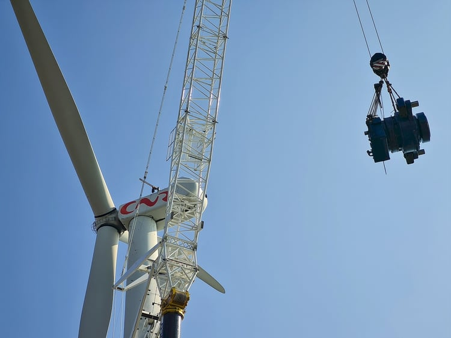
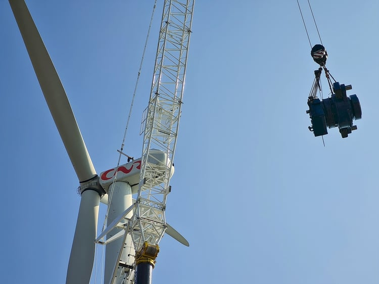
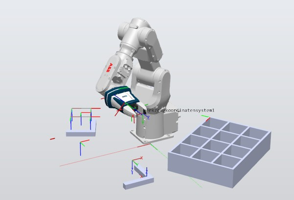
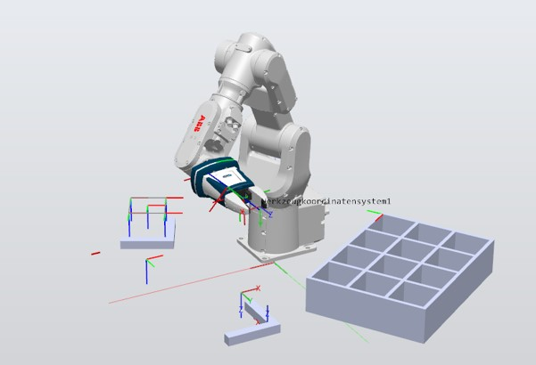

Bienvenue sur mon site
Utilisez le menu pour accéder à mon CV, mes compétences, mes projets, mes vidéos ou pour me contacter.


Utilisez le menu pour accéder à mon CV, mes compétences, mes projets, mes vidéos ou pour me contacter.
Actuellement étudiant en BUT Génie Électrique et Informatique Industrielle, avec une spécialisation en Automatique et Informatique Industrielle, je réalise ma formation en alternance au sein du groupe NORDEX. Cette expérience professionnelle m’a offert une immersion concrète dans le monde du travail, m’a permis de m’intégrer pleinement à une équipe, de participer activement à des projets réels et d’assumer des responsabilités variées, renforçant ainsi mes compétences techniques et professionnelles.
 

Lors de ma 2ème année d'alternance, j'ai comme projet de diriger un chantier de changement de multiplicateur "gearbox" d'éolienne. Organisation des équipes, planning et budget.
En cours...
Entretien en maintenance de l'éolienne. Changement de charbon de génératrice, du graissage(pales, rotor, génératrice), regonflage d'accumulateur de groupe hydraulique, prises de mesures, remplacement de filtres, test de sécurité(overspeed, arrêt d'urgence,...).
Voici mon diaporama de présentation de projet de première année d'alternance :
Voir la présentation PowerPointLe but de ce TP est de concevoir et mettre en œuvre un système automatisé capable de récupérer une pièce située sur une étagère, puis de la transférer vers un plateau de convoyage. La pièce est ensuite prise en charge par un système d’aspiration qui l’achemine vers une table tournante. Cette table permet d’analyser les caractéristiques de la pièce, notamment son matériau (plastique, aluminium ou métal) ainsi que ses dimensions. Ce projet met en avant l’intégration de plusieurs systèmes automatisés, la coordination des mouvements et la gestion du tri de pièces selon leurs propriétés physiques.
 

Mon projet consistait, après la récupération d’une pièce, à programmer le robot afin qu’il la présente soit à un capteur, soit à un opérateur humain pour permettre son identification. En fonction de cette analyse, la pièce était ensuite soit rejetée dans une poubelle, soit rangée dans un tiroir dédié. Afin d’optimiser le stockage et d’éviter le sur-remplissage, j’ai intégré un système de compteurs permettant de suivre le nombre de pièces présentes dans chaque tiroir et de gérer automatiquement leur capacité maximale. Ce projet m’a permis de travailler sur la logique de décision, la gestion des capteurs et la programmation robotique en mode manuel et automatique.
Mon projet consistait à programmer un robot Moway en langage C pour un système embarqué, avec pour objectif de percevoir et suivre une ligne au sol, puis de naviguer de manière autonome dans un labyrinthe afin d’atteindre la ligne d’arrivée sans intervention extérieure. Ce travail m’a permis d’approfondir mes compétences en programmation embarquée, en logique de contrôle et en conception de comportements autonomes pour robot mobile.

Mon projet consistait à développer un robot suiveur de ligne, avec le logiciel CCS C Compiler et en allant bien au-delà des fonctionnalités de base. J’ai notamment programmé l’interface utilisateur via un écran LCD et des boutons, permettant de sélectionner différents modes de fonctionnement. J’ai également intégré des indicateurs visuels avec des LED, contrôlées selon l’état ou le mode choisi. Ce projet m’a permis d’approfondir mes compétences en programmation embarquée, gestion d’interfaces homme-machine et contrôle de périphériques électroniques.
Emplacement Vide, en cours de construction...
Je pratique le handball depuis plus de 9 ans, ce sport m’a permis de développer l’esprit d’équipe, la rigueur et la persévérance. Je joue actuellement en Régionale 2 dans les Hauts-de-France avec le HBC Salouel, et nous enchaînons les compétitions, notamment avec la finale de la Coupe de la Somme pour la seconde fois consécutive. Le handball représente pour moi un véritable équilibre entre passion, engagement sportif et esprit collectif, tout en me poussant à me dépasser à chaque match.